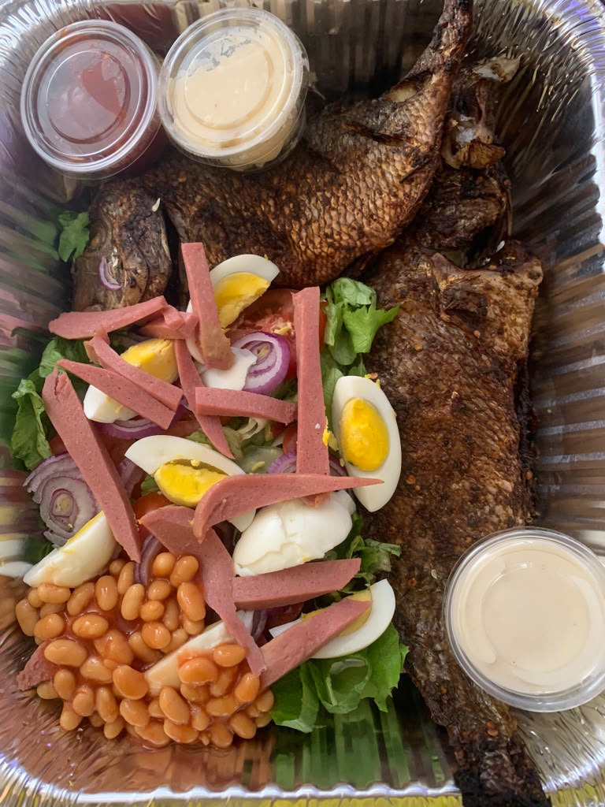
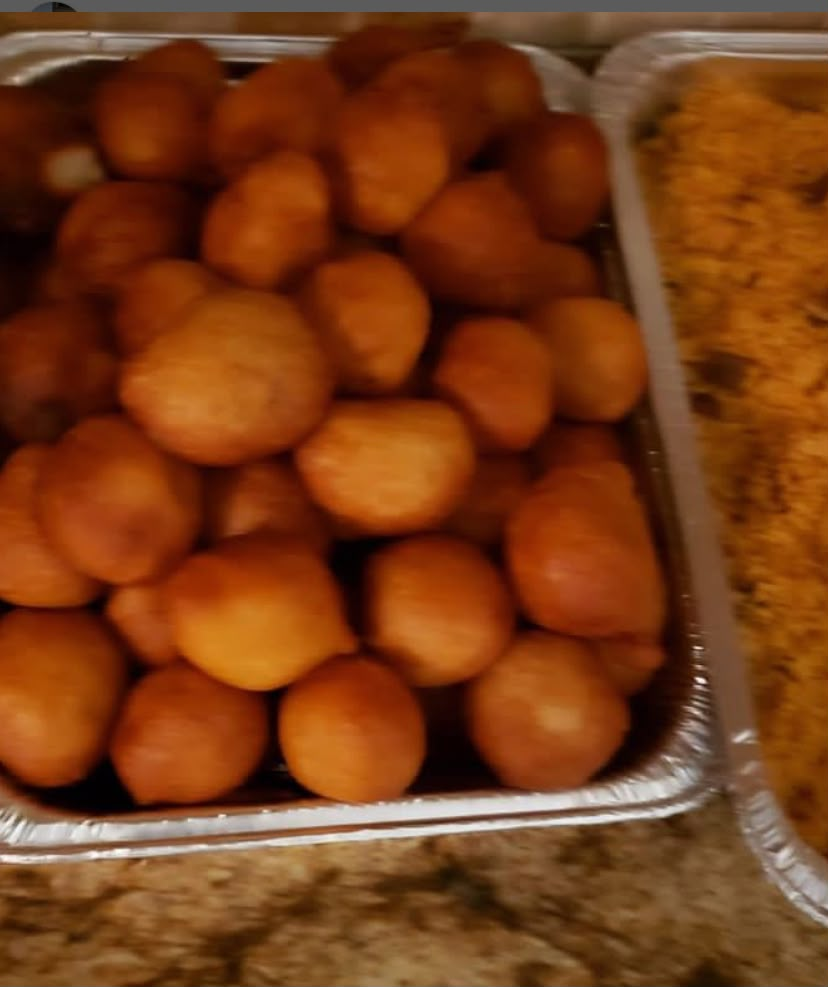
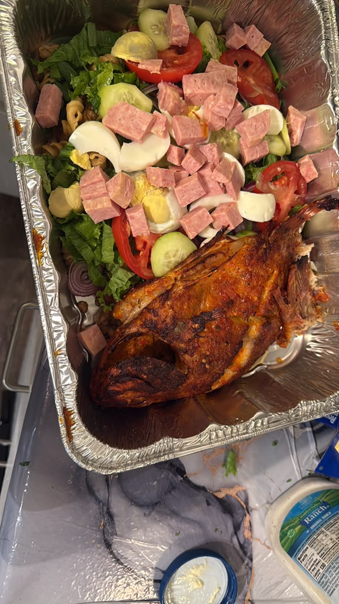

Visual Feast
Food Made to Be Shared
A closer look at real dishes, catering trays, and customer favorites prepared by Maggie's Kitchen.







Visual Feast
A closer look at real dishes, catering trays, and customer favorites prepared by Maggie's Kitchen.


